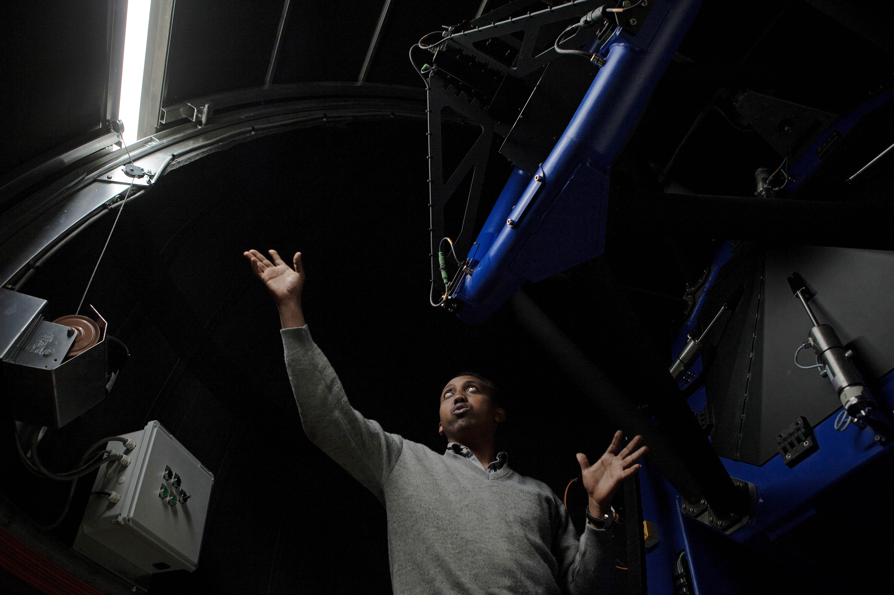
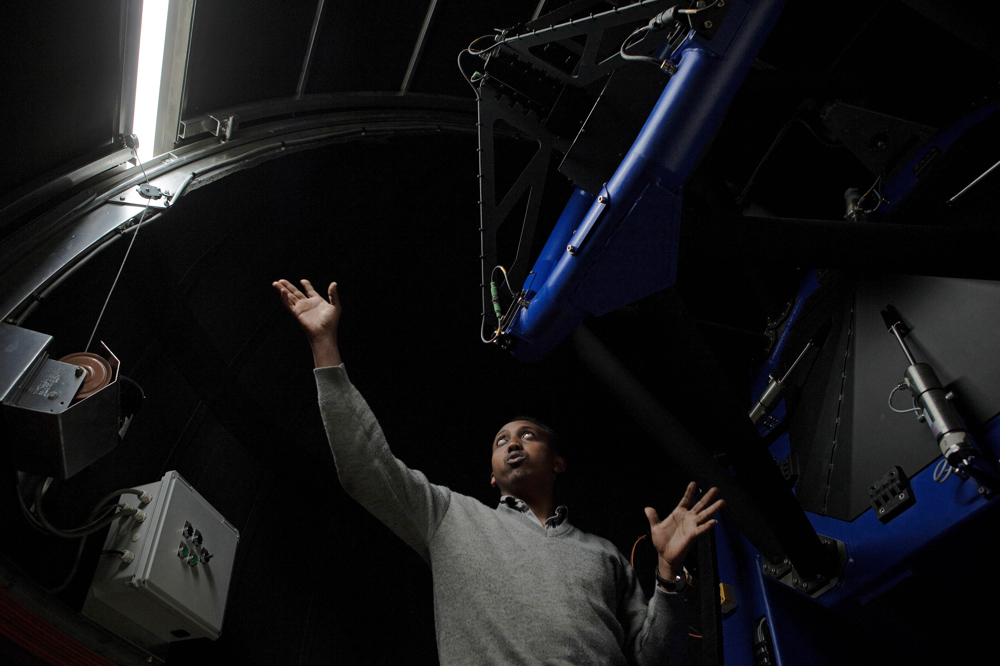

MY INTERESTS
MASSIVE GALAXIES

GALAXIES AT HIGH REDSHIFT
SOMEWHERE, SOMETHING INCREDIBLE IS WAITING TO BE KNOW

SCIENTIFIC VOLUNTEERING
Hi there! I'm an astronomer (a postdoctoral FCT Fellow if you prefer) working in the IA- Observatory of Lisbon in Galaxy Formation and Evolution, i.e. Observational Cosmology. I love studying extreme objects such as the most massive galaxies of the Universe, and anything related to challenge the current frontiers of our Physics theories.
¡Hola a todos! Soy un astrónomo (un postdoc FCT para los puristas) trabajando en el IA-Observatorio de Lisboa en Formación y Evolución de Galaxias o, en otras palabras, Cosmología Observacional. Me encanta estudiar objetos extremos como las galaxias más masivas del Universe, y todo lo relacionado con desafiar nuestros conocimientos físicos.
University of Nottingham (UK)
University of Salamanca (Spain)
3 Years Course
University of La Laguna / IAC (Spain)
2 Years Course
University of Salamanca (Spain)
5 Years Course
University of Lisbon (Portugal)
IA - Lisbon (Portugal)
University of Edinburgh (UK)
University of Edinburgh (UK)
IA-Lisbon (Portugal)
Spanish Astronomical Society
STFC (UK) and IAC (Spain)
Python
IDL
IRAF
GALFIT
SExtractor
Going out with my friends
MASSIVE GALAXIES
GALAXIES AT HIGH REDSHIFT
SOMEWHERE, SOMETHING INCREDIBLE IS WAITING TO BE KNOW

SCIENTIFIC VOLUNTEERING
Created by BLACKTIE.CO